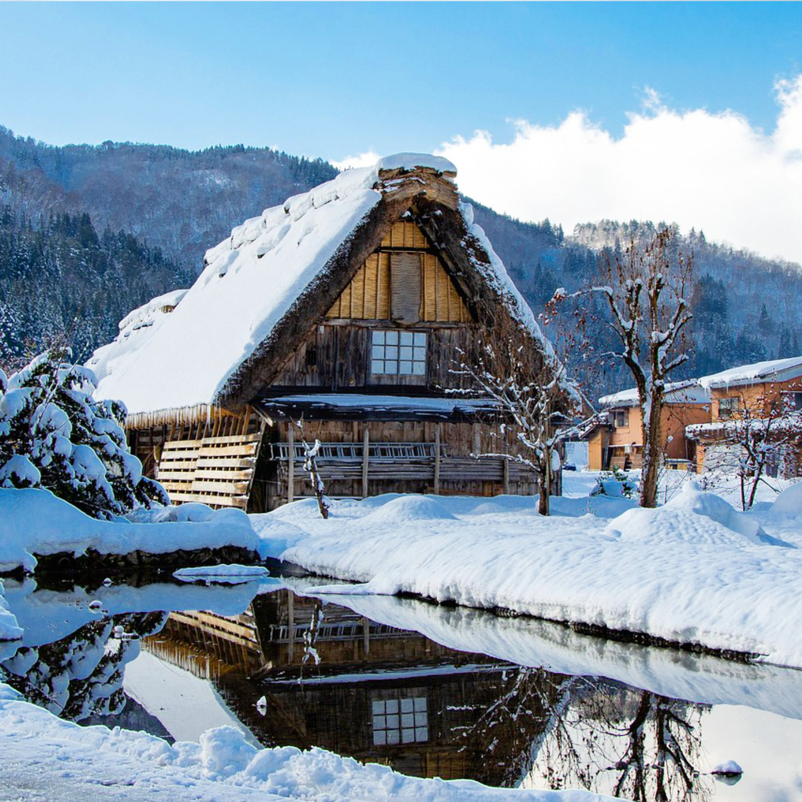

Shirakawa-go – A Picturesque Village in Japan’s Gifu Prefecture

Shirakawa-go (白川郷) is a UNESCO World Heritage-listed village located in the remote mountains of Gifu Prefecture, Japan. Known for its traditional gassho-zukuri farmhouses, Shirakawa-go offers visitors a glimpse into Japan’s rural heritage and a peaceful retreat surrounded by breathtaking natural beauty.
What is Gassho-zukuri Architecture?
The most iconic feature of Shirakawa-go is its traditional gassho-zukuri farmhouses, known for their steep, thatched roofs that resemble hands pressed together in prayer ("gassho"). These structures are designed to withstand heavy snowfall in the region’s harsh winters and have been passed down through generations for over 250 years.
Exploring the Shirakawa-go Village
Shirakawa-go is made up of several small hamlets, the most famous being Ogimachi. Here, visitors can explore the picturesque farmhouses, many of which are still occupied by local families. Some of these houses are open to the public as museums, allowing guests to step inside and experience traditional life in rural Japan.
The Scenic Beauty of Shirakawa-go
Whether you visit in the summer, when the lush green fields surround the village, or in winter, when Shirakawa-go is blanketed in a thick layer of snow, the landscape is stunning year-round. The village offers incredible photo opportunities, with the best vantage points being from the observation deck on a nearby hill.
How to Get to Shirakawa-go
- 🌸 From Takayama Station: Take the Nohi Bus to Shirakawa-go (approx. 50 minutes)
- 🌸 From Nagoya: It’s about a 3-hour drive to Shirakawa-go. There are also direct buses available.
- 🌸 Opening hours: Open year-round, but the village is most popular in spring, autumn, and winter
- 🌸 Best photo spots: The observation deck above Ogimachi Village, traditional farmhouses, and winter snow scenes
Why Shirakawa-go is a Must-Visit for Japan Travelers
Shirakawa-go offers a rare glimpse into traditional Japanese life, set against the backdrop of stunning natural beauty. The combination of historical architecture, serene landscapes, and cultural heritage makes this village a must-see for anyone visiting Japan, particularly those interested in rural life and nature.
Tags: Shirakawa-go, Gifu Prefecture, UNESCO World Heritage, gassho-zukuri, Japan villages, traditional farmhouses, rural Japan, Japanese culture
Planning to visit Shirakawa-go?
To get the most immersive and insightful experience, we recommend booking a certified local private guide from our team. All our guides are licensed professionals officially recognized by the Japanese government, offering personalized tours tailored to your interests. Please contact your selected guide in advance to confirm availability and get expert assistance for your trip.